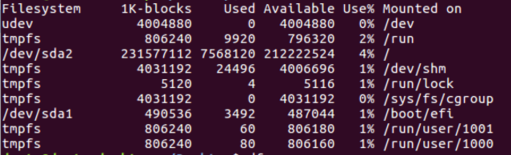

In this step, you will create a bootable USB drive with the Yocto Project*-based image on it. Later, you will use the USB drive to install the image on the target system.
The .wic image must be flashed manually to the target system. To prepare the USB drive, you will flash the .wic image to the USB drive. Then you will add a copy of the image to the same drive. This configuration will enable you to boot the target system from the USB drive and use the copied image to flash the destination drive.
On the host system, run df to see the drives:
df -h Example output:
Insert the USB drive in the host system and wait five seconds.
Run df again to find out where the USB drive is mounted.
df -h Typically the USB drive is mounted on /media/. Example output with USB
drive /dev/sdc1:
Run the following command to unmount the USB drive.
Replace “sd<letter><number>” with your USB drive.
In the example above, the drive would be /dev/sdc1.
sudo umount /dev/sd<letter><number> Go to the directory where the image is located, see Step 2: Prepare a Yocto Project*-Based Image.
cd <image_directory> Download the latest bmaptool release from
https://github.com/intel/bmap-tools/releases. Bmaptool flashes files to USB, similar to the dd command.
curl -Lo bmaptool https://github.com/01org/bmap-tools/releases/download/v3.4/bmaptool && chmod +x bmaptool Ensure that Python* module six is installed on the system.
pip3 install six Run the following command to generate a bootable USB flash drive.
Replace “sd<letter>” with your USB drive.
In the example above, the drive would be /dev/sdc.
This command will replace all existing data on the drive.
Make sure it’s the correct drive.
sudo ./bmaptool copy --bmap core-image-sato-sdk-intel-corei7-64-<datetime>.wic.bmap core-image-sato-sdk-intel-corei7-64-<datetime>.wic /dev/sd<letter> Add a copy of the image file to the USB drive:
On the host system, compress the image file for faster copying:
bzip2 -kf core-image-sato-sdk-intel-corei7-64-<datetime>.wic Find a partition on the USB drive that is big enough for the
compressed image file, for example, the partition named data.
One method of viewing partitions is to use gparted:
sudo gparted On the host system, create the mount point:
sudo mkdir /mnt/usb Mount the USB drive. Replace “sd<letter><number>” with the partition you identified in step 9b.
sudo mount /dev/sd<letter><number> /mnt/usb Copy the compressed image file:
sudo cp <compressed_image_file> /mnt/usb Copy the bmap file:
sudo cp core-image-sato-sdk-intel-corei7-64-<datetime>.wic.bmap /mnt/usb After copying the compressed image file, unmount the USB drive:
sudo umount /mnt/usb Remove the USB drive from the host system.